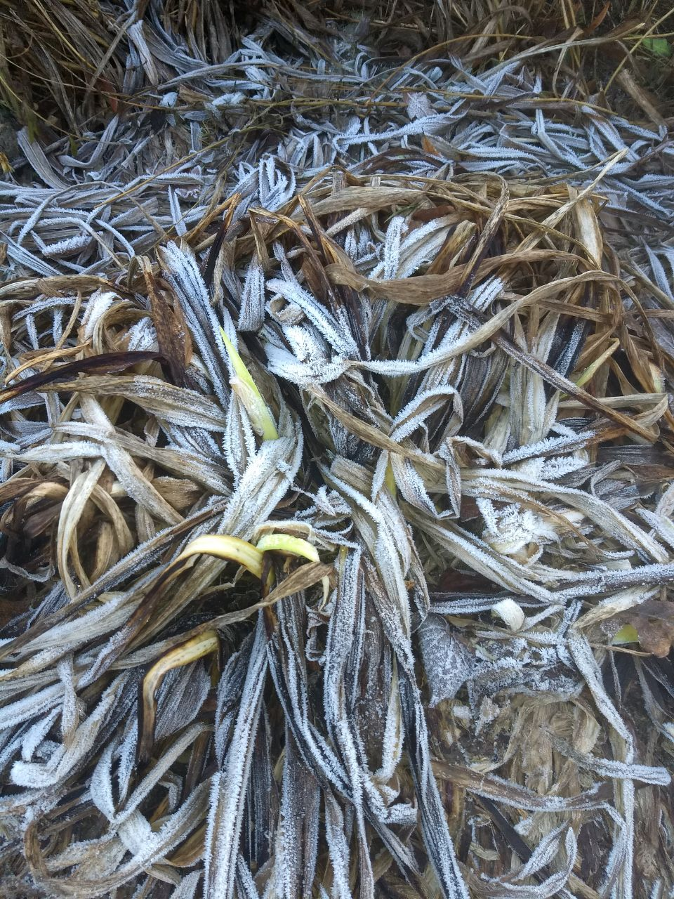

05.04 This is an attempt to document for future reference.
Some lines of thought.
..-----..
_..'''-- --'''.._
.' '.
| .'
'._ |
_.' '.
| |
\ |
| |
| ___ |
| |
| |
| |
| |
|
|
|
|
|
|
|

Don't expect much
__.-'| / \ /
__ ___.-' ._O|
.-' ' : _/
/ , \ .'
`-' . ` /
. . . .
. . .
. . . `
. .
. . .
. .
. .
. . .
. .
. . .
. . .
.